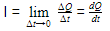
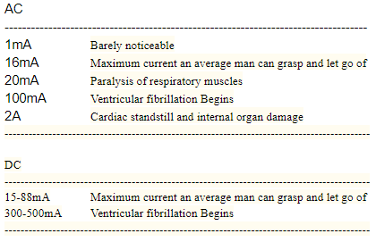

If you've ever been around the electrical engineering community, you've probably heard the phrase "Current kills!". Although there is some truth to this statement its just drivel! The phrase, "Its not the voltage that kills you, its the current", is being used more and more. This phrase holds some truth but is very misleading and dangerous!
Current is the measure of charge that passes a point in a period of time.
In other words, Current is the derivative of Charge. .
The following is a table from a Government safety document from the National Center for Biotechnology Information.
The table tells you what happens to your body when different amounts of current flows through it for DC and 50 or 60HZ AC.

Although The effects of high current through the body look deadly, there is still a lot more to take into consideration. This problem consists of many changing variables like time, resistance, distance, humidity, perspiration, Ac, dc, etc. If we use Occam's razor and simplify the problem and only consider current, voltage, and resistance we can come up with the following. Georg Simon Ohm, a German physicist, can show the relationship between voltage and current. Ohm crated the equation ohms law. V = IR or Voltage = Current times resistance. The skin on the human body (in dry conditions) may have a resistance of up to 100,000 ohms. If we assume, for instance, that a man named Greg had a fixed resistance of 50,000 ohms across his tongue and we supplied his tongue with 50 volts there would only be 1mA across his tongue. For us to achieve a current of 1A we would be required to apply 50,000 volts across Greg's tongue. But let's say that Greg's Tongue has a resistance of 1 ohm across it, applying 50 volts would supply 50 amps across the tongue! If Greg sustained Connection to the circuit for 1 second then in the first case Greg experienced 0.05 watts of Energy and in the second experienced 2500 Watts of Energy! As a refference Most Electrical outlet Plugs are rated for 1800 or 2400 watts of energy, So Greg may or may not be left with all 5 senses. As you can see Simplifying things make the question Is it the Current that kills or the Voltage Obsolete Since the resistance that the Voltage or Current is applied to changes it's antithesis and the supplied power dramatically. Because of the Linear Relationship between Voltage, Current, and resistance (V=IR), A better Question to ask, in this case, is How much power is too much.
Now after Simplifying things, it is evident that current alone is not what kills but a current that produced by a high enough voltage that can kill you. So far we've taken only resistence into account But what about time, or distance, change in resistance, Capacitance, Inductace, or even frequency? The Human body is like a very complet circuit which consists of Gradiants of Resistence, capacitance, and Inductance. When The body interacts with a external source of voltage and/or current things start to change with time.
One variable we can ignore is the distance. But your probibly asking yourself, Why ignore distance? Or What distance? I am refreing to the distance from one terminal of the supply to the other. Since skin resistance electricity we could view it like a resistor. When we increase the distance between sorce terminals the effective resistence of the skin will increase and vis versa. This is the same idea used in potentiometers (Variable Resistors). If we assume that the same distance is sustained then we can ignore this effect and pick a constant resistance to work with in different cases. The electrical resistance of hunam skin also changes with temprature and degree of wetness.